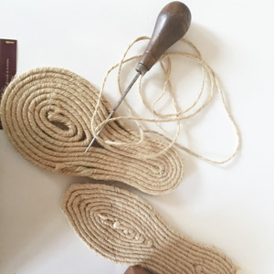
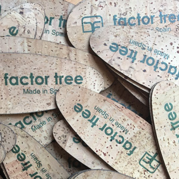
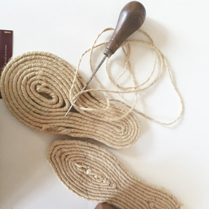
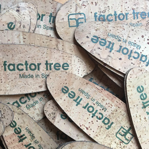

Materiales sostenibles
Uno de los aspectos fundamentales en la producción de calzado sostenible es la selección de los materiales, en Factor Tree apostamos por el uso de componentes naturales, de calidad, procedentes de proveedores europeos y producidos de modo responsable, respondiendo a criterios ecológicos y éticos.
Algodón orgánico
El algodón, aún siendo una fibra natural es una de las más contaminantes. El cultivo de algodón convencional consume un 25% de los insecticidas utilizados en el mundo, siendo perjudicial para la salud y el ecosistema, además es una planta extremadamente sedienta, la obtención de 1kg de algodón necesita entre 10.000 y 20.000 litros de agua.
El algodón orgánico, a diferencia del algodón convencional, es una fibra sostenible y ecológica, cuyo cultivo, hilado y producción se realiza sin químicos ni sustancias toxicas, no se utiliza irrigación, solo agua de la lluvia. Cuenta con múltiples beneficios, es hipoalergénico y transpirable, lo cual ayuda a absorber y eliminar el sudor, manteniendo el pie fresco y seco.
Nuestro algodón orgánico cuenta con el certificado GOTS (Global Textile Organic Standard) sello reconocido internacionalmente que asegura una cadena de producción responsable con el medio ambiente y la mano de obra.
Lino
El lino es una fibra natural, reciclable y sostenible que crece rápidamente sin necesidad de irrigación ni grandes cantidades de pesticidas o fertilizantes. Puede ser cultivada en tierra árida, no válida para la agricultura de alimentos y con la capacidad de recuperar tierras contaminadas. Es una fibra higiénica que no retiene los olores y que transmite gran sensación de frescor, ideal para los días de calor.
Yute
La fibra de yute es 100% biodegradable y reciclable. Una tonelada de plantas de yute consume cerca de 15 toneladas de dióxido de carbono y libera 11 toneladas de oxígeno. Crece rápidamente, no necesita plaguicidas y se alimenta de agua de lluvia. Cuando se realiza la rotación, este cultivo enriquece la fertilidad del suelo para las siguientes cosechas.
Corcho
El corcho es un material completamente natural, renovable, reciclable y biodegradable, con propiedades únicas. No produce contaminación, porque se obtiene directamente de la corteza del alcornoque, principalmente en España y Portugal, a través de un proceso tradicional, sin perjudicar al árbol, la corteza se regenera y su extracción se lleva a cabo cada 9 -12 años. Del proceso productivo del corcho se aprovecha todo, siendo totalmente sostenible. El corcho es muy confortable y permite al pie una mejor transpiración.